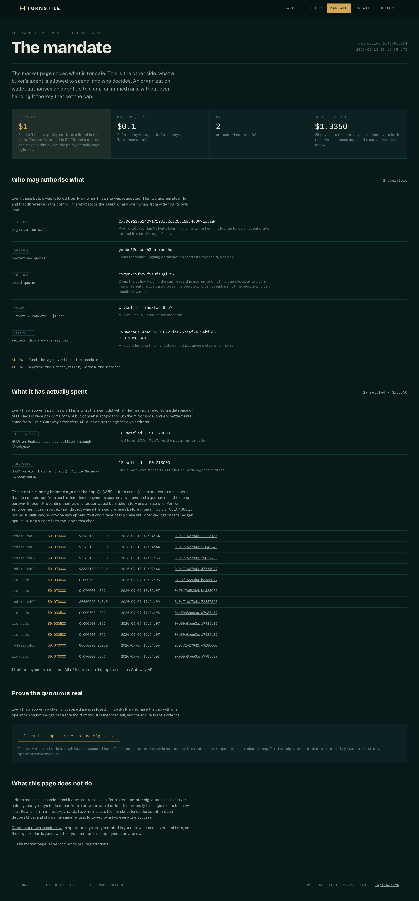

Neither rail is read from a database of ours. Hedera receipts come off a public consensus topic through the mirror node; Arc settlements come from Circle Gateway’s transfers API, queried by the agent’s own address. Both are third-party surfaces that would contradict us if we were wrong.
| Rail | Settled | Payments | Value |
|---|---|---|---|
hedera-x402 |
HBAR on Hedera testnet, through Blocky402 | 12 | $0.840000 |
arc-usdc |
USDC on Arc, batched through Circle Gateway nanopayments | 13 | $0.215000 |
As read from the mirror node and the Gateway transfers API, 2026-09-09.
The eleven Arc payments linked below are the subset settled by 2026-09-07,
when docs/EVIDENCE.md pinned
their batch transactions; the count grows every time the demo runs.
$1.0550 settled and a $1 cap are two true numbers that do not subtract from
each other, and presenting them as one running balance would be a tidier
story and a false one. These payments span several runs, and a quorum
raised the cap partway through. Per-run enforcement lives in
buyer/mandate/, where the agent refuses before it pays.
Claim
The same query settled over both rails in one run, and returned the same verdict both times.
- Proof
-
Arc authorization
fa4ca648-863c-4f61-9a1e-2953eb789f7fand Hedera transaction 0.0.7162784@1788800327.098234984. One run, one URL, one verdict. - Where
-
HashScan
·
docs/arc-nanopayments.md - Enforced
-
seller/service/no-chain-code.test.tsfails the build if any file on the payment path names a chain, a vendor, an asset or a chain library. It caught this for real on a merge. - Rerun it
npm run demo
The first paid request
Worth pinning separately, because a first settlement is the one that proves the rail exists at all rather than that it repeats.
Claim
A real paid request settled on Hedera testnet, and the buyer paid no gas.
- Proof
-
0.0.7162784@1788791855.758948636 —
0.84367844 HBAR ($0.07) from
0.0.10408012to0.0.10403961. The buyer’s account moves by exactly the price, not one tinybar more. - Where
- HashScan · mirror node
- Receipts
-
HCS topic
0.0.10408013, which has no submit key — so anyone may append to it, and a receipt is a claim until checked against the ledger. ThereceiptsMCP tool does that check. Read them with no key.
Sub-cent payments, and the nonce that proves it
A $0.0005 query cannot pay for its own settlement. The deposit that funded
this entire mandate cost 0.0019 USDC in gas — about
four times the price of one nanopayment. Circle Gateway makes that work by
inverting who submits: the payer signs an EIP-3009 authorization
offchain, Gateway credits the seller immediately and returns an
authorization id, and Circle’s batcher redeems many authorizations in
one on-chain transaction later.
Which is why a settlement returns a UUID, not a transaction
hash. The hash does not exist yet when the buyer gets its
answer. npm run arc:receipts -- --ours resolves an
authorization into the batch it eventually landed in.
That inversion is what makes the hot tier on page 03 checkable rather than asserted. A wallet that has never broadcast a transaction has never paid a wei of gas, and a nonce cannot be faked or back-dated:
agent 0x0633a193017939Bb1eB242982397224c66948e2F
eth_getTransactionCount 0 <-- never submitted anything
eth_getBalance 0
USDC.balanceOf 0
read at block 60943091, 2026-09-07T17:33:02Z
After eleven settled payments. Re-run it against
https://rpc.testnet.arc.network and get the same answer at
that block. scripts/arc-paid-request.ts prints this before and
after every run, so a regression fails visibly.
Claim
Sub-cent payments batch into one transaction, and the spending agent pays exactly zero gas.
- Proof
- Seven payments in block 60940635 (22 payments in total, including other Gateway users’, 0.133111 USDC moved, gas paid by Circle’s batcher), and four more in block 60942503 — so the first was not a fluke.
- Nonce
- Agent 0x0633a193…8e2F on ArcScan, still 0 after all eleven.
- Funded by
-
The warm tier, calling
depositFor(0.25 USDC, agent)— the deposit transaction. The org pays the gas; the balance belongs to the agent.
Before you open a block explorer
Not claimed
The Arc payout address reads 0 USDC on chain, and always will. Nothing went wrong.
- Why
- Circle Gateway credits a Gateway balance, not the wallet. The seller was credited 0.144500 USDC as of 2026-09-07, and none of it is visible as an ERC-20 balance at 0x0Adca6e14bA956201D221feC767e4f24194bf5F2.
- Consequence
-
A judge who opens ArcScan on the payout address and stops there will
conclude nothing settled. Check it with
npm run arc:setup -- --status, or open the two batch transactions linked above, which are on chain. - Scope
- This is how Gateway works, not a limitation of ours — and it is the flip side of the batching that makes a $0.0005 payment possible at all. The Hedera rail has no equivalent gap: HBAR moves account to account and shows up on HashScan.
One identifier trap, since it cost this project a day in the opposite
direction. Arc has two names and both are correct in their own place:
eip155:5042002 is the CAIP-2 the x402 wire wants, and
arcTestnet is the chain name the Circle SDK wants. Passing
either to the other throws.
rails/arc-usdc/config.ts holds both and says which is which.